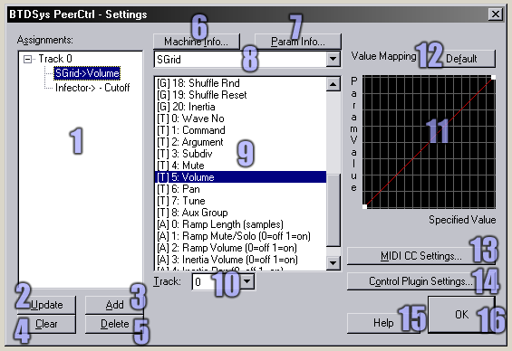
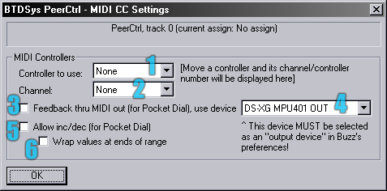
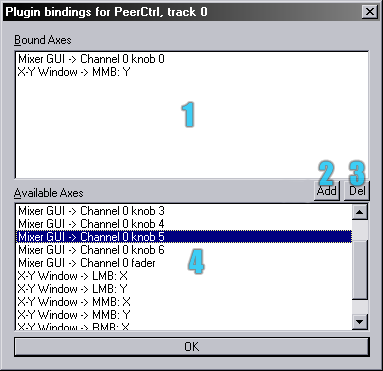

BTDSys PeerCtrl v1.5
What is it?
PeerCtrl is a general-purpose control machine - that is, it controls the parameters of other Buzz machines.
The following are just some of its potential uses:
- Control several machines from one machine
- Access parameters which would not normally fit onto the pattern editor screen
- Add inertia to any parameter on any machine
- Tie several parameters to one slider
- Assign non-linear mappings to parameters
- Use endless rotary encoders, such as those on Doepfer's Pocket Dial, to
control Buzz
- Control other machines' attributes from patterns
- Use the plugin interface to add new ways of controlling parameters, such as X-Y pads or mixer-style GUIs
Installation
Unzip into your Buzz\Gear\Generators\ folder. Ensure everything in the PeerCtrl directory within the zip file, ends up
in Buzz\Gear\Generators\PeerCtrl\ . Add to index.txt if you want, or download an up-to-date index.txt if you're lazy.
Quick-start guide
- Add PeerCtrl to your song, along with some other machine
- You don't need to connect anything to PeerCtrl in the machine view
- Right click PeerCtrl and select Assignment Settings
- In this dialog, choose the machine and parameter you want to control
- Click Update, then OK
- Use PeerCtrl's parameters to control the other machine
Version history
- v1.0: First public release.
- v1.1: Fixed crashing on song load bug, added control rate attribute.
- v1.5: A lot of new stuff.
Parameters
Global parameters
- Inertia - Sets glide time on the parameters.
Track parameters
- Slaved (not in the 'Basic' version) -
If this is switched on, this track is controlled by the slider of the previous track, rather than by its own.
- Value - The value to use for the controlled parameter. This is affected
by the defined mapping.
Attributes
- MIDI Inc/Dec Amount - this sets the sensitivity, when MIDI increment/decrement messages
are used.
- Ctrl Rate - sets how frequently PeerCtrl performs control changes between ticks. When this
attribute has a value n, control changes will occur every 256×n samples (as well
as on every tick). The exception is a value of zero, which causes control changes to occur only on the
tick.
In general, smaller values result in smoother inertia & MIDI control, but place a heavier load on the CPU.
Dialogs

- Assignments list - Lists all currently assigned parameters on all tracks.
- Update - Save settings by replacing whatever is currently selected in the assignments list.
- Add - Save settings by adding a new assignment entry for the current track.
- Clear - Drop the currently selected assignment, leaving an empty slot.
- Delete - Drop the currently selected assignment, and remove it from the list for the selected track.
- Machine info - Display some very interesting stats on the selected machine.
- Param info - Display equally interesting stats on the selected parameter.
- Machine dropdown - Use this to select the machine you want to control.
- Parameter list - Use this to select the parameter you want to control.
- Track dropdown - Use this to select the track you want to control on the selected machine.
- Mapping - Use this to create a non-linear relationship between the parameter value chosen in PeerCtrl, and
the resultant value on the target machine. This works in exactly the same way as the envelope editor in Buzz's wavetable
view.
- Default mapping - Restore the default mapping (like that shown in the screenshot).
- MIDI CC Settings - Bring up the MIDI settings dialog for the current track.
- Control Plugin Settings - Bring up the plugin axis settings dialog.
- Help - Bring up this fine document.
- OK - Give it a click once you're done.

- Controller - Select the MIDI CC number to use. Note that the number of the last moved controller is
displayed to the right of this box.
- Channel - The MIDI channel on which PeerCtrl should listen.
- Feedback - Some MIDI controllers require parameter changes are fed back through the MIDI output. Use this
option if that is required.
- Feedback device - The device through which to feed back parameter changes. Be sure to configure it in Buzz's
options too!
- Allow inc/dec - Some MIDI controllers with endless rotary encoders send CCs 96 and 97
as increment and decrement messages respectively. Use this option to enable this.
- Wrap values - If enabled, an increment message when the parameter is already at its maximum will cause the
value to wrap around to the minimum, and similarly at the other end of the scale. If disabled, the parameter will stop
at each end of the range.

- Bound Axes - Lists the plugin axes already bound to the current track.
- Add - Bind the axis selected in the Available Axes list to the current track.
- Del - Un-bind the axis selected in the Bound Axes list.
- Available Axes - Lists all availalbe axes on all active plugins.
Plugins
PeerCtrl plugins implement features such as new graphical interfaces, or hardware/software interfaces. Plugins take
the form of .dll files in your Buzz\Gear\Generators\PeerCtrl\ folder. Programmers can create their own plugins (using
Visual C++) -- for more info on that, click here.
Thanks
Thanks to:
adrian jonsson, andreas tilliander, cameron bonde, cyanphase, elektrojaenis, erthad, frank potulski, jeph wacheski,
juri puumala, km krebs, lee du-caine, magmavander, matt jackson, midi nerd, moon.god, mute, mva, omnihil, oskari, ps,
raul reales, ronny pries, thorsten keller, tic-tac shut up, wizenwet, everyone else who gave feedback or encouragement.
And thanks to you for actually reading the docs for once. Nice one.
EOF/legal
Docs and code ©2002-2003 Ed Powley
email | website
This machine is freeware and freely distributable, provided no money is charged and all files are present and
unchanged.